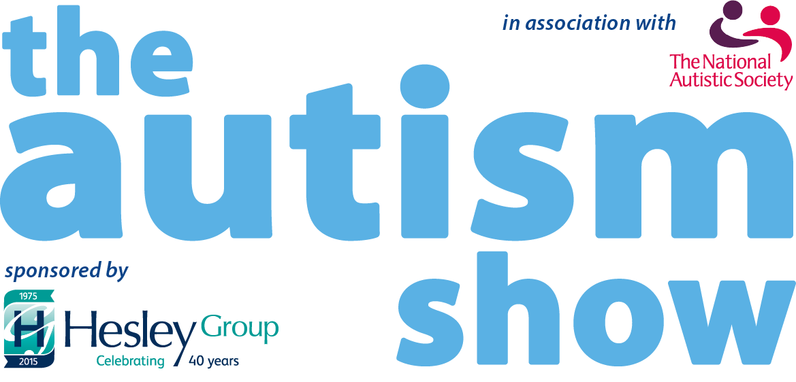
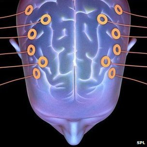

© 2012 The Hidden Aspie | Content - Valerie Carlin | Design & Website - Jan Szafranski | Site Contents
Share this page

Current Scientific Research
Professor Simon Baron-Cohen, Director of the Autism Research Centre (ARC), University of Cambridge, led a recent study into Autism. It showed that there are five times as many Scientists, Engineers or IT professionals with Aspergers than in the general population. Most are unrecognised.
Baron-Cohen has also designed an online diagnostic test to give an indicator of autistic characteristics. lt cannot replace actual diagnosis by a suitably qualified person, but it can give a good indication. Accurate diagnosis must take into account the number, pattern and intensity of the traits in an individual. This potential for variety makes Asperger's a spectrum rather than a simple yes/no.
Latest News
Here are the latest items of news that you can read here or in your reader by subscribing. You can also follow the latest posts on our Twitter and Facebook accounts.
posted 27 Apr 2016, 11:49 by Valerie Carlin
How not to squander the potential of autistic people
... companies could benefit from hiring autistic people. Agencies that specialise in recruiting them stress that even if they interview badly (not making eye contact, taking questions too literally), they may still be good workers. For autistic candidates, employers should consider replacing interviews with tests of relevant skills—filing tests for filing jobs, coding tests for coding jobs, and so on. Once an autistic person is hired, small adjustments help employers to get the best out of him: for example, by providing a calm workspace and clear instructions, expressed textually or visually rather than verbally.
Interesting article about qualities Aspies can bring to the work place. See more at
http://www.economist.com/news/leaders/21696944-how-not-squander-potential-autistic-people-beautiful-minds-wasted
posted 16 Jun 2015, 22:01 by Jan Szafranski [ updated 16 Jun 2015, 22:03]
Something worth adding to your diary, The Autism Show will be opening its doors again in Birmingham this weekend, and Manchester on the 26/27th at EventCity (where yours truly will be giving his talk on The Hub - Theatre One on Hidden Traits to nourish which proved to be very popular in the London event last weekend). There is much to experience at both remaining events, and you will be kicking yourself if you miss it. And if you make it to the Manchester event, be sure to pop your head in at the Autistics UK stand where I will be when not talking to the masses.
The Autism Show offers more information, advice, products and services on autism (including Asperger syndrome) than can be found anywhere else in the UK. This year in the NEC Birmingham don't miss Dr Carole Buckley speaking about how GPs can support people with autism; Sarah Hendrickx discussing social and personal relationships on the autism spectrum; and the interactive Get Cycling Test Track and Sensory Classroom features. And when in Manchester, also don’t miss Senior Specialist Educational Psychologist, Dr Madeleine Portwood speaking about understanding the child behind the label; Consultant Behaviour Analyst, Dr Paul Holland discussing Challenging Behaviour and ABA; and an exclusive performance from The Autistic Superstars.
london.autismshow.co.uk/
posted 5 Mar 2015, 12:55 by Valerie Carlin [ updated 5 Mar 2015, 12:57 by Jan Szafranski]
Autism is almost entirely genetic in origin, new research has suggested, with between 74 and 98 per cent of cases down to biological make-up. This means that the condition is far more heritable than previously thought.
Science finally catches up-;
http://www.independent.co.uk/news/science/autism-caused-by-genetics-study-suggests-10086939.html
posted 26 Feb 2015, 11:07 by Valerie Carlin [ updated 26 Feb 2015, 11:09 by Jan Szafranski]
The myth of the ‘extreme male brain’ means women with autism are struggling to get the help they need
Autism, characterised in the past as a result of an “extreme male brain”, is far more prevalent in women than previously thought but is still often untreated because the stereotype focuses on male behaviour; women, it is commonly believed, mask their symptoms by learning to imitate the behaviour of non-autistic people. But without a diagnosis, experts say, their difficulties with social interaction and attachment to routine are misunderstood at school and then work, leaving them at increased risk of mental health problems including depression, eating disorders and self harm. Often naive and fearful of displeasing people, autistic women are also vulnerable to abuse.
And yet a recently published draft of new guidance, designed to improve the care and support NHS organisations and local authorities give to adults with autism, made no mention of women’s differing needs.
http://www.theguardian.com/lifeandstyle/2015/jan/05/are-women-with-autism-being-failed-by-nhs
posted 23 Feb 2015, 15:42 by Jan Szafranski [ updated 23 Feb 2015, 15:42]
Autism genes activate during fetal brain development
Scientists at the University of California, San Diego School of Medicine have found that mutations that cause autism in children are connected to a pathway that regulates brain development. The research, led by Lilia Iakoucheva, PhD, assistant professor in the Department of Psychiatry, is published in the February 18 issue of Neuron.
The researchers studied a set of well-known autism mutations called copy number variants or CNVs. They investigated when and where the genes were expressed during brain development. "One surprising thing that we immediately observed was that different CNVs seemed to be turned on in different developmental periods," said Iakoucheva.
Autism mutations may influence brain size through RhoA pathway during fetal brain development. Credit: UC San Diego School of Medicine
For full article go to http://medicalxpress.com/news/2015-02-autism-genes-fetal-brain.html
posted 15 Feb 2015, 14:36 by Valerie Carlin [ updated 23 Feb 2015, 15:43 by Jan Szafranski]
- See more at: http://www.neuroscientistnews.com/research-news/brain-system-appears-compensate-autism-ocd-and-dyslexia#sthash.L5pahJ5s.dpuf
Individuals with five neurodevelopmental disorders -- autism spectrum disorder, obsessive-compulsive disorder, Tourette syndrome, dyslexia, and Specific Language Impairment -- appear to compensate for dysfunction by relying on a single powerful and nimble system in the brain known as declarative memory.
This hypothesis being proposed by a Georgetown University Medical Center neuroscientist is based on decades of research. It is published online and will be in the April issue of Neuroscience and Biobehavioral Reviews.
The proposed compensation allows individuals with autism to learn scripts for navigating social situations; helps people with obsessive-compulsive disorder or Tourette syndrome to control tics and compulsions; and provides strategies to overcome reading and language difficulties in those diagnosed with dyslexia, autism, or Specific Language Impairment, a developmental disorder of language.
posted 20 Jan 2015, 19:41 by Valerie Carlin [ updated 20 Jan 2015, 19:41 by Jan Szafranski]
Scientists Pinpoint Cell Type and Brain Region Affected by Gene Mutations in Autism
A team led by UC San Francisco (UCSF) scientists has identified the disruption of a single type of cell – in a particular brain region and at a particular time in brain development – as a significant factor in the emergence of autism.
The finding, reported in the Nov. 21 issue of Cell, was made with techniques developed only within the last few years and marks a turning point in autism spectrum disorders (ASDs) research.
http://www.ucsf.edu/news/2013/11/110371/scientists-pinpoint-cell-type-and-brain-region-affected-gene-mutations-autism
posted 20 Jan 2015, 19:39 by Valerie Carlin [ updated 20 Jan 2015, 19:40 by Jan Szafranski]
I looked at the world and the world looked back at me for 50 years.
Then I was diagnosed with Asperger’s Syndrome and suddenly everything changed”.
“I looked at the world and the world looked at me for 50 years. Then I was diagnosed withAsperger’s. Getting the diagnosis had a profound effect. Over the following weeks, a thousand shards seemed to rush together to form a single mirror. I could see myself at last. There were no distortions, no ‘missing pieces’. So I could stop searching for them.
If you’ve ever beaten yourself up about your ‘failings’ you might begin to comprehend the sense of relief. After a lifetime seeking that elusive ease that other people seem born with, I suddenly realized that they were born with it, and I was not.
https://seventhvoice.wordpress.com/2013/11/12/i-looked-at-the-world-and-the-world-looked-back-at-me-for-50-years-then-i-was-diagnosed-with-aspergers-syndrome-and-suddenly-everything-changed/
posted 20 Jan 2015, 19:33 by Valerie Carlin [ updated 20 Jan 2015, 19:40 by Jan Szafranski]
Coping with such a child would be difficult for any parent, but it was especially frustrating for his father, one of the world’s leading neuroscientists. Henry Markram is the man behind Europe’s $1.3 billion Human Brain Project, a gargantuan research endeavor to build a supercomputer model of the brain. Markram knows as much about the inner workings of our brains as anyone on the planet, yet he felt powerless to tackle Kai’s problems.
“As a father and a neuroscientist, you realize that you just don’t know what to do,” he says. In fact, Kai’s behavior—which was eventually diagnosed as autism—has transformed his father’s career, and helped him build a radical new theory of autism: one that upends the conventional wisdom. And, ironically, his sideline may pay off long before his brain model is even completed.
https://medium.com/matter/the-boy-whose-brain-could-unlock-autism-70c3d64ff221
posted 20 Jan 2015, 19:30 by Valerie Carlin [ updated 20 Jan 2015, 19:31 by Jan Szafranski]
Social psychologist Amy Cuddy’s talk from TEDGlobal 2012 touched a nerve, and sparked a sensation. In the talk, “Your body language shapes who you are,” Cuddy offered a free, low-tech life hack: assume a posture for just two minutes — and change your life. The idea caught on, the talk has now been viewed more than nine million times, and the idea of “power posing” has truly entered the vernacular. For the visualization below, created in conjunction with Brazilian magazine Superinteressante, the designers illustrated some of the points Cuddy makes about posture and its impact on how we feel. Take a look … and stand up straight.
http://blog.ted.com/2013/12/13/fake-it-til-you-become-it-amy-cuddys-power-poses-visualized/
